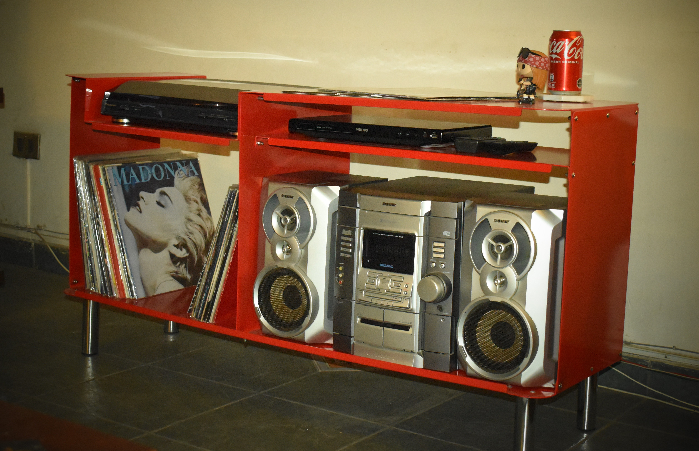
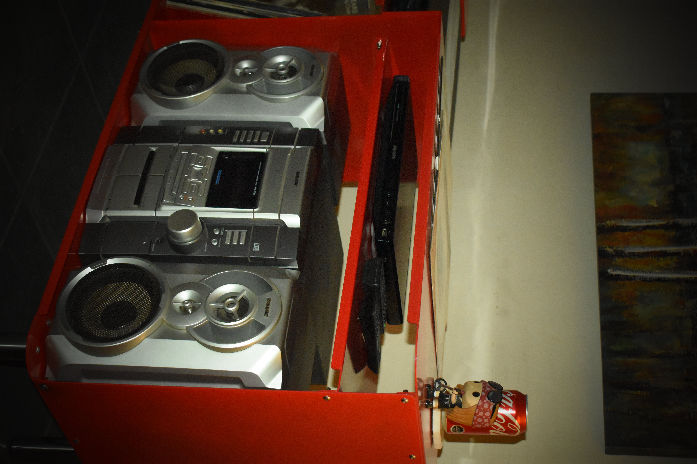
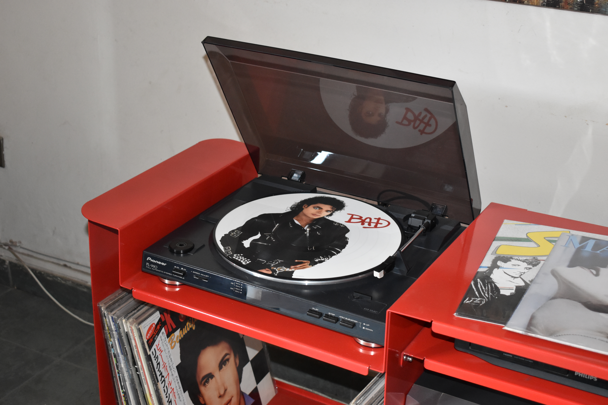
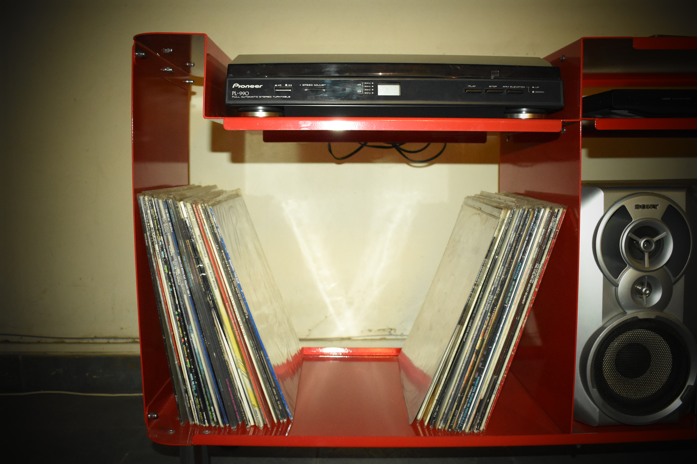
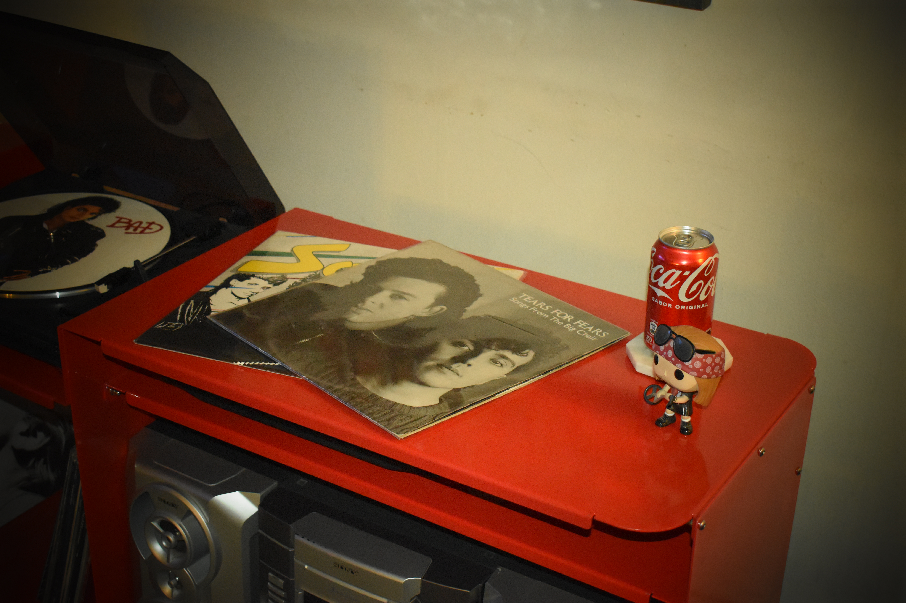
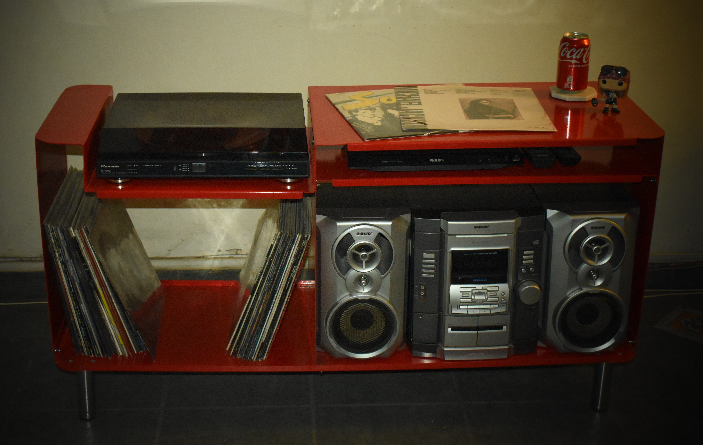

Ir a galería de fotosDescripción
Mueble para equipos musicales hecho a medida. Contiene el equipamiento necesario para escuchar vinilos, cds y cassetes. Su cubierta está diseñada para adaptarse perfectamente al tornamesa Pioneer y con compartimentos con el espacio necesario para la colección de vinilos.
Está fabricado mediante corte láser y plegado. Las uniones son unicamente perno y tuerca.
Materiales
- Estructura completa de acero carbono de 2mm de espesor.
- Patas tubulares de acero inoxidable.
- Pintura electroestática color rojo ferrari.
- Pernos button M5 y tuercas gorro de acero inoxidable.
Contexto
Me inspiré de las electrolas que contienen el sistema de reproducción de vinilos al mismo tiempo que el espacio de almacenamiento. Concretamente, diseñé este mueble para mi mamá, que tenía sus equipos y la música guardadas en su closet. Fue necesario crear un espacio donde pudiese acceder a su colección y reproducirla de manera eficiente, todo dentro de un mismo lugar.
Fabricación
Se utilizó una plancha completa de acero carbono para las seis piezas de la estructura. La cubierta y la base, se unen a dos paredes laterales, una pared nervio al centro y una bandeja. Todas las piezas, excepto las paredes laterales, están diseñadas a base de plegados para darle la forma y proporcionar firmeza y estabilidad.
Para optimizar el espacio de la placha, las piezas debían ser las menos posibles, es por ello que decidí darle a la cubierta la característica forma hundida para contener el tornamesa y darle al mueble un aspecto reconocible, además del color que destaca en el ambiente.
Dimensiones
1.25 metros de largo x 40 cm de ancho x 65cm de alto.




